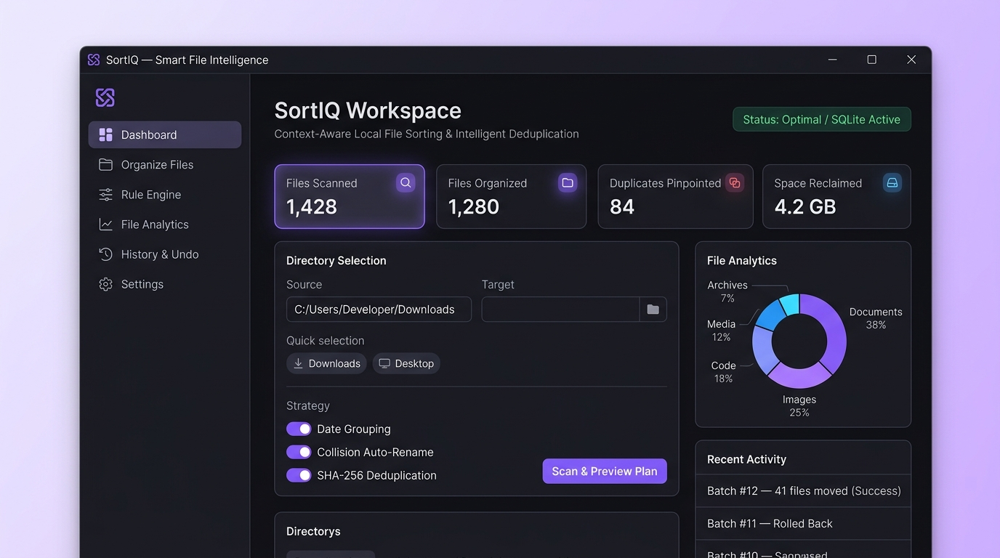

01 Desktop + CLI
File Organization & Rollback Engine
SortIQ
Context-aware Windows desktop & headless CLI file organizer (Obsidian/Electric Violet Tkinter UI + PyInstaller .exe) with priority wildcard/regex rules, O(N) size + chunked SHA-256 deduplication, dry-run simulation, and 1-click SQLite batch rollback.